🛠 開発環境構築
開発環境構築（Minecraft 1.20.1）
このページでは、Minecraft 1.20.1 用 MOD を開発するための環境構築手順をまとめています。
① Minecraft 1.20.1 用インストーラーのダウンロード
以下のリンクから、1.20.1 用の Installer 一式をダウンロードします。
➡ Minecraft 1.20.1 Installer（Google Drive）
↓すべてダウンロード

その時に、自分のエクスプローラー上に今回の開発作業で使用するフォルダを作成します。
ダウンロード先を、その場所に指定して、解凍してください。
例: D:\6_Dev\ (合わせる必要はない)

② Java 17 が入っているか確認
コマンドプロンプトを開き、以下を入力します：
java -version
Java17(Version 17であればOK) が表示されない場合は、以下からインストールしてください。
※Version 17が表示された場合はSKIPし、③IDEのインストールへ
①で解凍したフォルダ中の zulu17.42.19-ca-jdk17.0.7-win_x64.msi をダブルクリック
↓ Next

↓ Will be installed on local hard drive に変更し、Next

↓ Install

↓ 数分待機

↓ Completed になっていることを確認し、Finish

③ IDE（統合開発環境）のインストール
IntelliJ IDEA を①の中の idea-2026.1.3.exe をダブルクリックしインストールします。
↓ 次へ
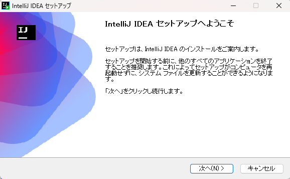
↓ 空き容量があるドライブを自分で選択する。どこでもOK
例: F:\JetBrains\IntelliJ IDEA 2026.1.3

↓ 画像のようにチェック
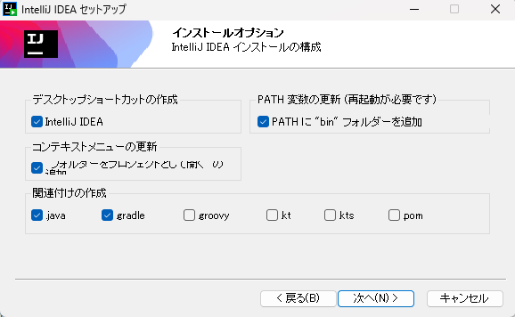
↓ そのままインストール
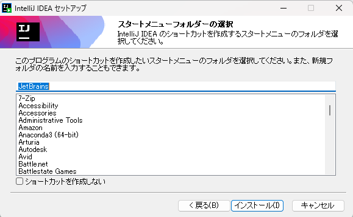
↓ 数分待機する
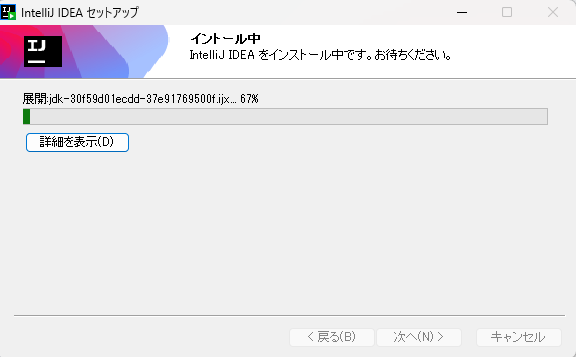
↓ 実行にチェックが入っていることを確認して、完了

↓ アプリが立ち上がったら、skip import
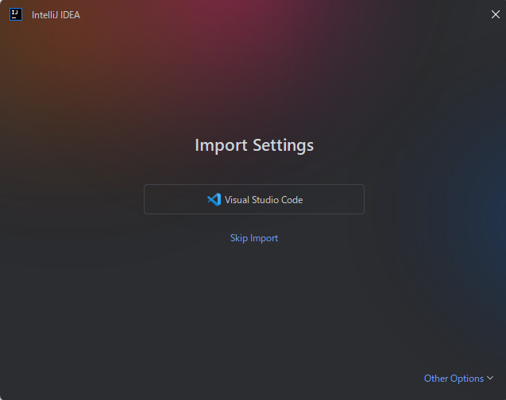
↓ 以下の画面になったことを確認し、アプリは閉じずにそのままにしておく
④ Minecraft Forge MDK のインストール
①の中の forge-1.20.1-47.4.13-mdk.zip を①で作ったフォルダ上で解凍します。
例: D:\6_Dev\Mods\forge-1.20.1-47.4.13-mdk

⑤ IntelliJ でプロジェクトを開く
- 日本語設定に変更
- IntelliJ → Open → MDKフォルダを選択
- 信頼するにチェック
- インポート完了まで待機
- SDK が Java17 であることを確認
- Gradle → forgegradle runs → runClient を実行
- Minecraft が起動することを確認
- 言語を日本語に変更
↓ 左下歯車 → settings
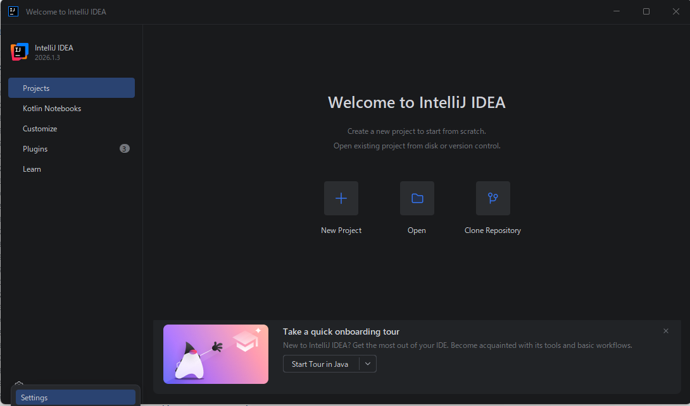
↓ 日本語、Asia に設定

↓ Restart → 日本語化確認
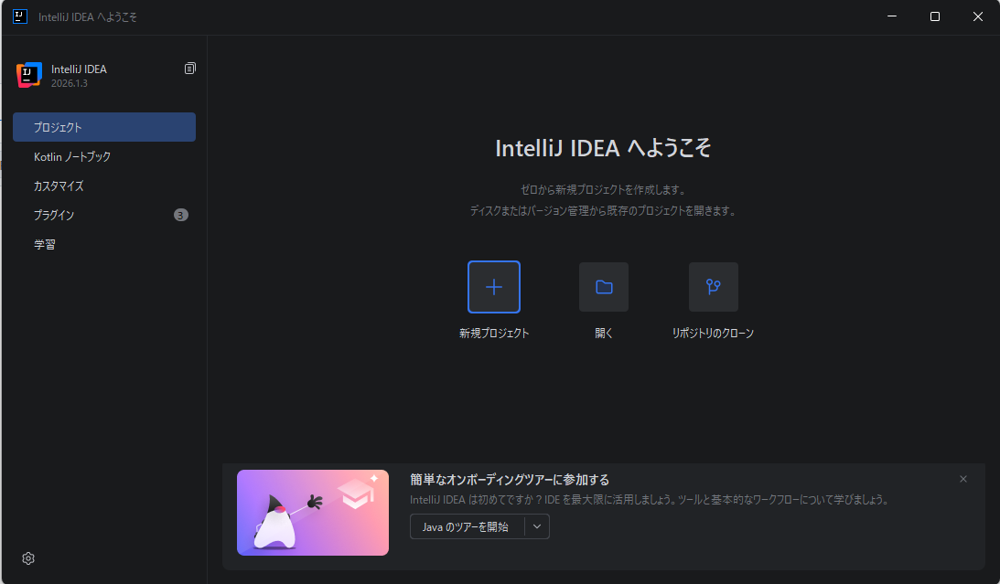
↓ プロジェクト > 開く
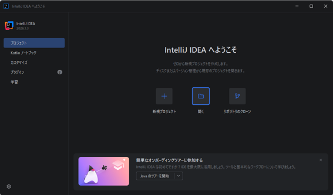
↓ forge フォルダを選択
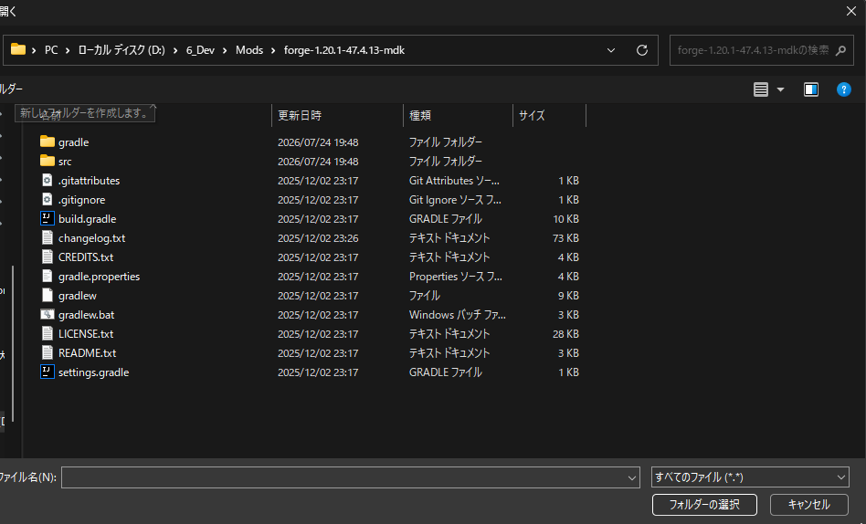
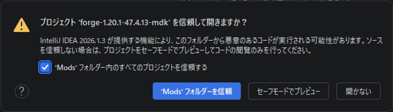
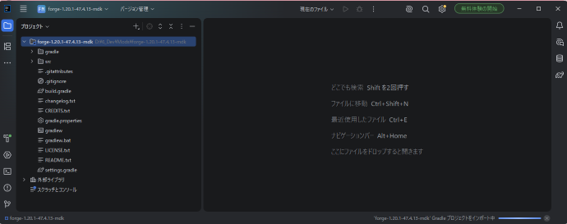
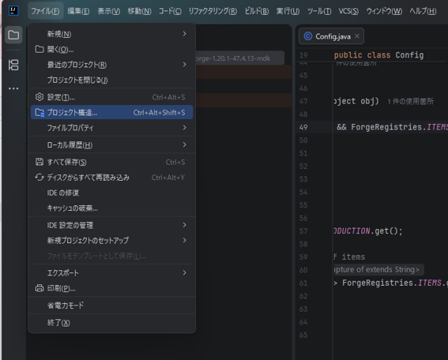
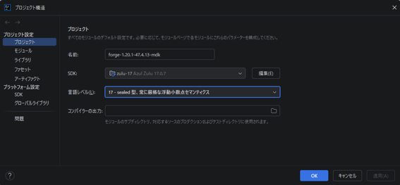
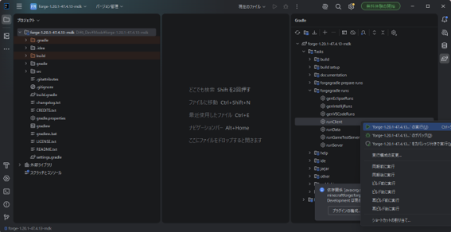
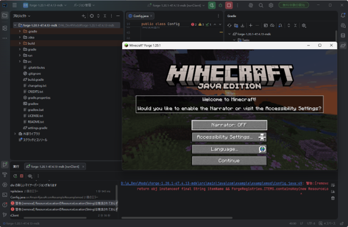
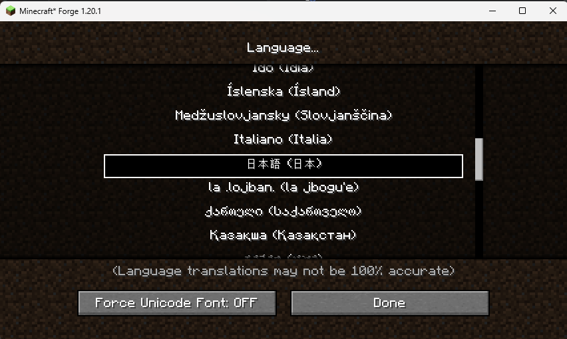
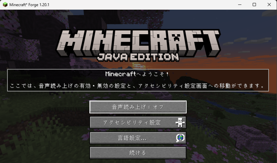
これで環境構築は完了です。
次は block 開発を試してみてね！